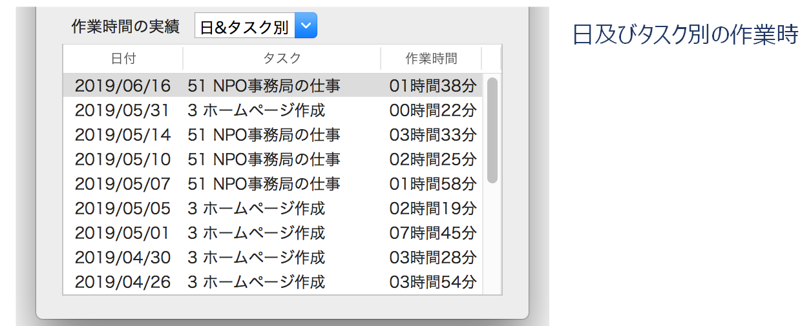

タイムカード
工数管理のツールとして、作業の種類（タスク）ごとに作業時間を記録するアプリケーションを作ってみた。

操作手順
マスタファイルの登録
コードと名称からなるタスク情報をマスターファイルに登録する。
作業開始時
テーブルビューに表示されたタスクの一覧から、開始するタスクを選んでクリックする。作業時間レコードを一件作成する。レコードは、タスクコード、開始日付時刻、終了日付時刻、経過時間からなる。開始時に、タスクコード、開始日付時刻を記録する。
作業終了時
終了ボタンをクリックする。終了日付時刻を記録し、経過時間を計算する。キャンセルボタンをクリックすれば、作業時間レコードは削除され、記録はキャンセルされる。
作業時間の実績の表示
作業時間レコードをもとに、特定のキーを単位として作業時間を集計し表示する。キーは、日別、タスク別、日及びタスク別の３種類とする。
ウィンドウのクローズ時
作業レコードを累積データファイルに出力する。テキスト形式なので、簡単に加工して利用することができる。累積データファイルはアプリケーション開始時に、全件読み込む。
クラス構造図
クラス一覧
アプリケーションを制御し、TaskオブジェクトとTaskSheetオブジェクトを保持する。
タスク情報を配列として持つ。NSArrayクラスのカテゴリで、要素の追加や照会といった機能を追加する。
個々のタスク情報を持つ（タスクコード、タスク名称）
タイムカードアプリケーションの主要クラス。作業の開始、終了、キャンセルといった作業時間の入力操作を制御する。入力された作業時間を保持し、作業時間をグループごとに集計した実績リストを作成する。入力データをファイルに出力する。
作業時間（開始時刻、終了時刻、経過時間）保持する。経過時間を計算する。
汎用的な時間計算を行うメソッドを提供するシングルトンクラス。